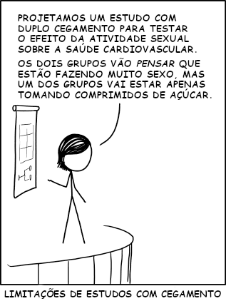

Capítulo 1 O Que É Estatística?
1.2 Exercícios
-
Você está interessado em estimar a altura de todos os homens da sua faculdade. Para isso, você decide medir as alturas de todos os homens da sua turma de Estatística.
- Qual é a amostra?
- Qual é a população?
Um instituto de pesquisa entrevista um grupo de \(1000\) pessoas, perguntando a cada uma se ela vai votar a favor do candidato \(A\) na próxima eleição. Dos entrevistados, \(600\) responderam que sim. A proporção \(0{,}6\) (ou \(60\%\)) é uma estatística ou um parâmetro?
-
Você vê alguma diferença entre as cinco situações abaixo? Quais das situações são equivalentes em termos da probabilidade de conseguir \(10\) cartas do mesmo naipe?
Usando um baralho normal, você retira \(10\) cartas e registra as cartas retiradas.
Usando um baralho normal, você repete a seguinte sequência de ações \(10\) vezes: retirar uma carta do baralho, registrar a carta retirada e repor a carta no baralho.
Usando uma caixa contendo todas as cartas de \(1\) milhão de baralhos reunidos, você retira \(10\) cartas e registra as cartas retiradas.
Usando uma caixa contendo todas as cartas de \(1\) milhão de baralhos reunidos, você repete a seguinte sequência de ações \(10\) vezes: retirar uma carta da caixa, registrar a carta retirada e repor a carta na caixa.
Usando um baralho infinito, você retira \(10\) cartas e registra as cartas retiradas.
Usando um baralho infinito, você repete a seguinte sequência de ações \(10\) vezes: retirar uma carta do baralho, registrar a carta retirada e repor a carta no baralho.
-
Qual a graça dos quadrinhos na Figura 1.1, que também aparecem no vídeo?

Figura 1.1: http://xkcd.com/552/
-
Qual a graça dos quadrinhos na Figura 1.2?
Figura 1.2: http://xkcd.com/1462/
-
Veja este vídeo sobre o cavalo Hans:
Qual a relação entre esta história e a necessidade de duplo cegamento?
1.4 Exercícios
Por que não faz sentido calcular a média dos CEPs de um grupo de pessoas?
Uma temperatura de \(-40\) graus Celsius é igual a uma temperatura de \(-40\) graus Fahrenheit?
Uma temperatura de zero graus Celsius é igual a uma temperatura de zero graus Fahrenheit?
Uma variação de temperatura de \(1\) grau Celsius é igual a uma variação de temperatura de \(1\) grau Fahrenheit?
Um saldo bancário de zero reais é igual a um saldo bancário de zero dólares?
Um produto de \(1\) milhão de reais custa o mesmo que um produto de \(1\) milhão de dólares?
Meses representados por números de \(1\) a \(12\) são dados de que nível?